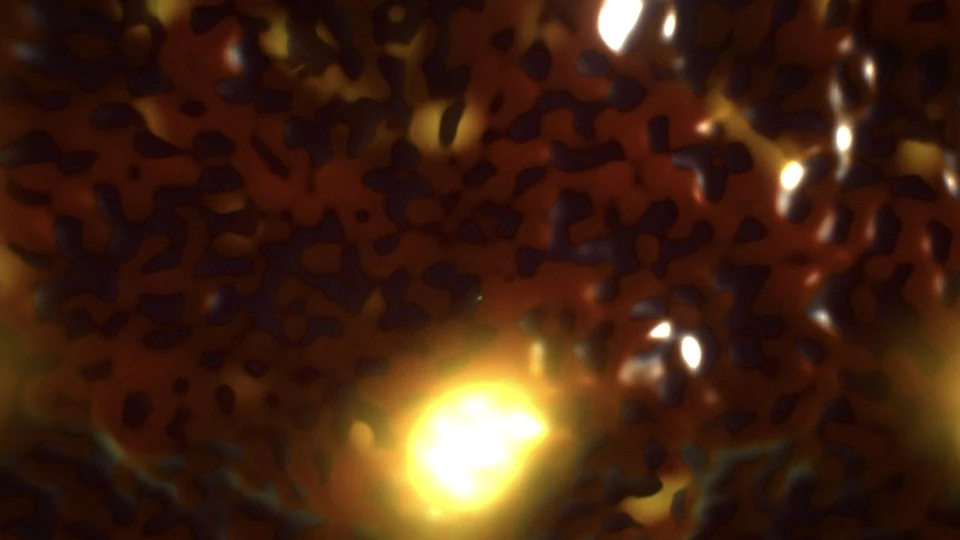
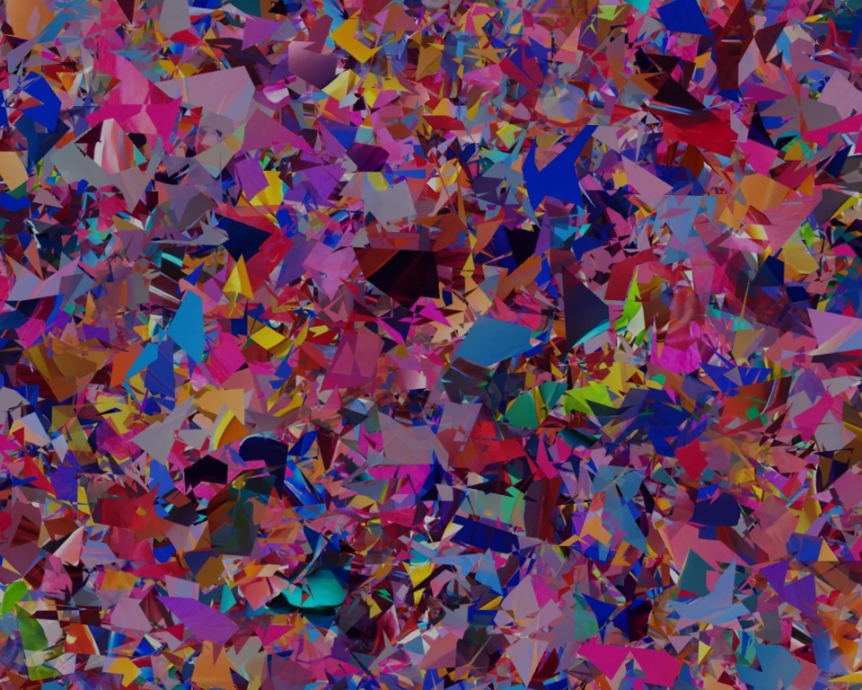

CF—GV—001 / Generative moving image
Wave Sculpture
A surface that never quite settles.
Two versions of a real-time JavaScript work. Shifting color, carved depth, pulsing light, and a continuously changing surface.
Play the workCF / Experiments
Systems in motion. Outcomes left open.

CF—GV—001 / Generative moving image
A surface that never quite settles.
Two versions of a real-time JavaScript work. Shifting color, carved depth, pulsing light, and a continuously changing surface.
Play the work
CF—GA—001 / Generative art
Fragments accumulate.
Four saved outputs made with Processing scripts. Color, pattern, and image fragments gather into densely layered fields.
View the stills